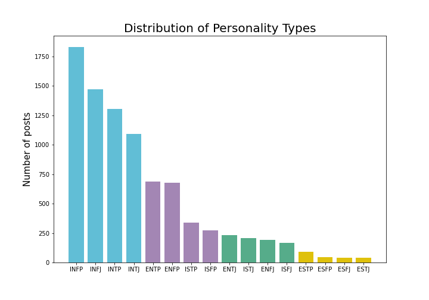
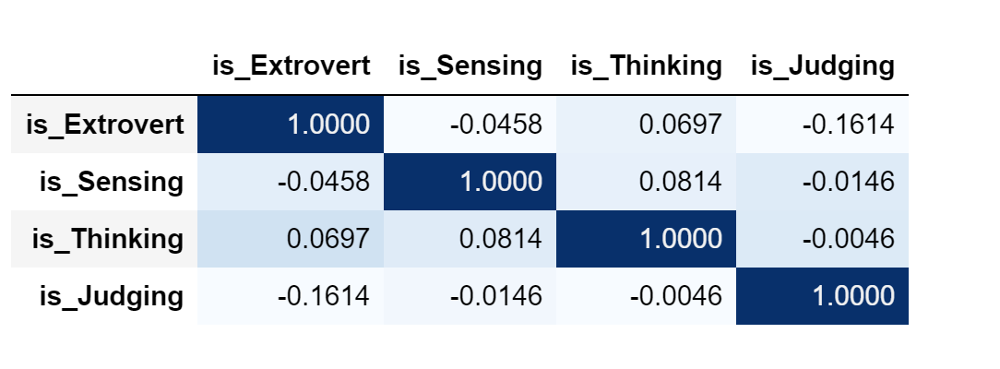
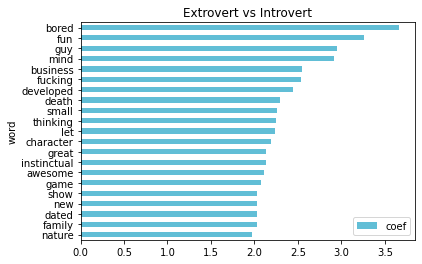

This was a long and arduous process. Finding meaningful datapoints, exploring different models and realizing predicting everything in a single model doesn't work. Then splitting up the attributes and continuing the process times 4. The end result is 4 models, each to predict 1 attribute of the Myers-Briggs personality type and combine them later.
The purpose of this project is to apply natural language processing and machine learning classification algorithms to examine if a person’s MBTI traits correlates with his/her style of writing on the forums.
The publicly available Myers Briggs personality type dataset on Kaggle was used for this project. This dataset contains over 8675 rows of data. On each row is a person’s:
To examine the proportionality of each of the sixteen personality types, Matplotlib was used to plot the value counts of each of these sixteen types. The figure shows that there was high class imbalance in the dataset.
To handle the class imbalance issue, the following two steps were taken:
Pandas correlation method was used to plot the correlation matrix to find any strong correlations between any of the four personality features. The plot shows that the features didn’t not show any strong correlation.
Following steps were taken to prepare the data for machine learning models:
Cleaning the DataSentiment Intensity Analyzer was used to calculate compound, positive, negative and neutral sentiment score for each user using the clean posts.
Part of Speech TaggingNLTK POS tagger was used to tag each word with its part of speech tag. The average number of each of the POS tags was calculated for each user based on the original posts. The POS tags included were – Noun, Pronoun, Verb, Adverb, Adjective, Conjunction, Determiners, Numbers, Prepositions, Particles and Punctuations.
CountingPer user average counts were taken for number of question marks, exclamations, colons, emojis, words, unique words, upper case words, links, ellipses and images. These counts were our additional features for the machine learning models covered in step 6.
This was our final step. Various classifications models were used in this step on the dataset.
Using Logistic Regression coefficients, we did feature importance and plotted top 20 words used by each of the 4 Myers Briggs traits.
The dataset was heavily imbalanced with most people identifying as introverted (I) and Intuitive (N) rather than extroverted (E) and Sensitive (S). This caused all our models to have a hard time classifying Extroversion vs. Introversion and Sensitivity vs. Intuition. We were able to overcome this problem to some extent by using Imbalance Learn’s Random Under Sampling method. This improved the scores but not significantly. We also added extra words that didn’t seem to be very helpful in classifying a personality trait to the stop words list to make the model predict more efficiently. Our model is able to predict 2 to 4 traits out of a total of 4 traits and we consider this as success because even for human readers it is difficult to accurately predict a person’s Myers Briggs personality type.
In our future efforts to improve this model, we plan to add more data specifically for the types that have low counts in our current dataset to balance the classes. We also want to implement a neural network based model in an attempt to see if that can outperform our current model in accurately predicting all 4 traits of the Myers Briggs personality type.
“The human race is just a chemical scum on a moderate-sized planet, orbiting around a very average star in the outer suburb of one among a hundred billion galaxies. We are so insignificant that I can't believe the whole universe exists for our benefit. That would be like saying that you would disappear if I closed my eyes.”